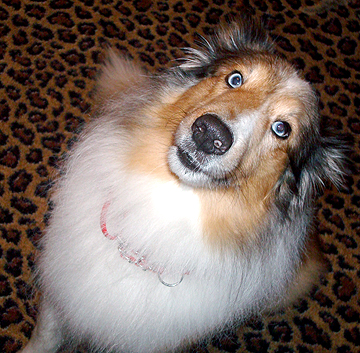

About Us
SC Sheltie Rescue is a non-profit group comprised of volunteers who donate time, abilities, and homes to help displaced/abandoned/abused shelties find a forever home. Our main goals are the protection and care of the shelties already here, the prevention of over-breeding and poor breeding practices, and the education of any sheltie owner who requests it.
Our volunteer foster homes work with the shelties in our care by caring for them, evaluating their temperaments, house training them if necessary, and getting them to and from the vet for any necessary medical care.
Breed rescues exist because the people involved know the breed best -- breed rescues often consist of past and current breeders, owners of the breed, and trainers. Shelties, like other purebreeds, have certain behavioral and genetic traits that can present challenges to those unfamiliar with the breed. That's why we're here and why we feel we're qualified to match our rescued shelties with the best homes FOR THEM.
Adopting a Rescue Sheltie
The first step to adopting from SC Sheltie Rescue is to fill out the adoption application in full. Leaving answers blank may result in a delay in processing your application. We do not operate on a first-come, first-served basis. Instead, we aim to place our rescues in the best homes for them based on personality and any behavioral or medical issues that need to be considered. We reserve the right to refuse any applicant.
Donations
Donations are always needed and welcomed. A vet bill for a sheltie needing all vaccinations, tests, spay/neuter and pet meds can run about $300.00. Sometimes, we end up needing to do a dental and bloodwork as well. Blood panels alone cost $115.00. Donations can be sent to: SC Sheltie Rescue, P.O. Box 11414, Columbia, SC 29211.
Sheltie Fun Day
Our annual fundraiser and get-together is happening on Sunday, October 13, 2013. Click here for more info. Updated 09/09/13!
The CGC (Canine Good Citizen) test will be administered during the event by a certified trainer. (PLEASE email Phyllis Beasley if you plan on your dog taking the test)